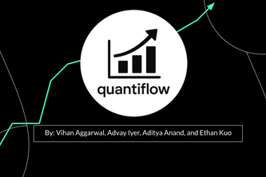

Projects

Guide to the Galaxy
Immersive 3D astronomical data visualizer

SkipTheLine
Revolutionary AI-powered auto-checkout system

GovGuide
Intelligent civic technology platform for government services

Nav A Lab
AI-driven academic research placement platform

Real Versus Fake
Advanced AI detection system for synthetic media

Dr. Debate
AI-enhanced educational platform for debate training

Quantiflow
Comprehensive AI-driven financial management ecosystem